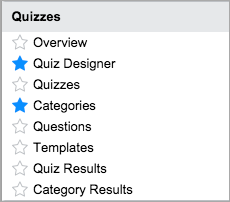

Quizzes
Contents
1 Overview
Quizzes are questionnaires you can assign to one or more users to assess their knowledge of any subject. Each question is scored, and the overall score indicates the percentage of questions the user answered correctly. A quiz may have categories of questions that are assigned only to some users. You can assign weighting values to individual questions or categories of questions that make them more or less important when calculating the overall score. Quizzes are available starting with the Fuji release and require activation by a system administrator.
2 How Quizzes Work
The quiz functionality is built on the assessment engine and provides many of the same features as assessments and surveys. Quizzes provide the following functionality:
- An administrator can create a quiz for any purpose and assign it to a single user or multiple users.
- A quiz can contain one or more categories of questions. Each category can be assigned to users who answer only the questions in that category.
- The system can send email notifications to these users:
- Recipients: The recipient can receive notification of an assigned quiz, a quiz whose allowed duration is at 50%, and a quiz that is overdue.
- Recipient's manager: The recipient's manager can receive notification when a quiz is overdue.
- Quiz manager: The quiz manager can receive notification of an overdue quiz to which he or she is assigned.
- Quizzes can contain questions that are scored or not scored. Unscored questions assess opinions or involve dates and are not counted in the final score. Scored questions specify correct answers and are scored either as 0% or 100%. You can apply a weighting scale to scored questions to establish their relative importance. You can designate questions with these data types as scored questions:
- Checkbox
- Choice
- Duration
- Likert Scale
- Numeric Scale
- Template
- Yes/No
- A quiz question can be dependent on the response to any scored question. For example, you can create a dependent question requesting additional information that appears only if a recipient answers No to a specific question.
- You can edit an existing quiz easily.
3 Key Terms
- Quizzes: A quiz contains information such as duration, state, and notification controls and lists the existing categories. Text fields on the quiz form allow an administrator to create introductory content and end notes that are displayed to the recipient.
- Categories: A quiz category represents a theme for quiz questions. Each category contains one or more questions and names the recipients for the questions in that category. By default, the system creates one category with the same name as the quiz. You can create additional categories as needed. Categories can be weighted higher or lower to determine the importance of that category in the overall score.
- Questions: A quiz question is a question configured for a category and sent only to the users for that category. Questions have a wide variety of data types and can be individually weighted higher or lower. Questions may be scored or unscored.
- Category user: A category user is the recipient of questions for a specific category. You can select different users to answer the questions for each category.
- Templates: A template is a question data type that provides reusable rating scales for answers to questions. For example, the answer template named Satisfaction contains a satisfaction scale ranging from Very Satisfied to Very Dissatisfied.
4 Quiz Process
Use the following procedure to set up and administer quizzes.
- [Optional] Create any reusable question templates you want to have available for quizzes.
- Create the quiz using the Quiz Designer or with forms accessed from the navigation menu. The quiz record includes specifics such as duration, notification preferences, a questionnaire introduction, and ending notes displayed to recipients.
- Edit the default category or create additional categories as needed. The system automatically creates a category with the same name as the quiz.
- Define users for each category. These are the recipients who answer the questions in a category. You can define different users for each category.
- Create the questions for each category.
- Create the answers for each question and determine if the questions are scored. You can create unique answers or select preconfigured answers from a template.
- Publish and distribute the quiz. You can send the quiz to a single user or all users in each category.
- Review the results from the submitted quizzes in reports and scorecards.
5 Roles
The Quizzes application uses the following roles. No role is required to take quizzes that are assigned to you.
| Role title [name] | Description |
|---|---|
| assessment administrator [assessment_admin] |
Can administer the Assessments application and all quiz records. Can access all the modules of the Assessments application. Note: The itil_admin role and, starting with the Eureka release, the survey_admin role contain the assessment_admin role. |
| administrator [admin] |
Can access all aspects of the assessment and survey processes. Only administrators can modify survey notifications, create survey modules, and import surveys. |
6 Menus and Modules
To access quiz features, use these modules under the Quizzes menu:
|  |
|
{kind=link}
7 Activating Quiz Designer
Administrators can activate the Quiz Designer plugin.
| Click the plus to expand instructions for activating a plugin. |
|---|
|
If you have the admin role, use the following steps to activate the plugin.
|